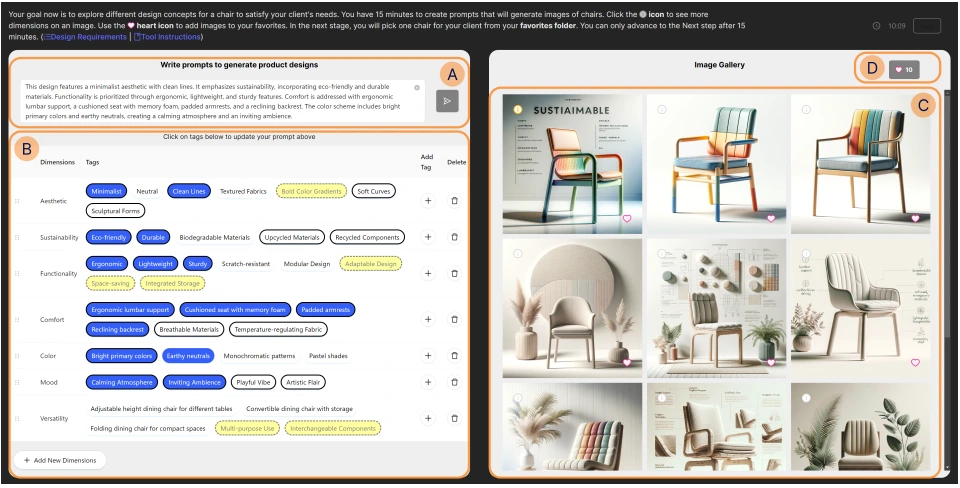
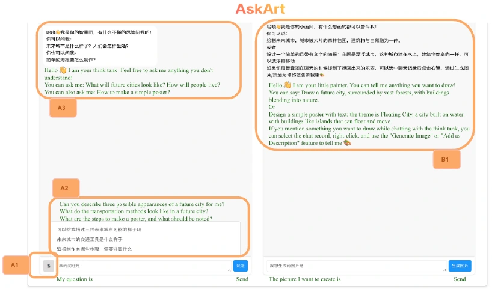
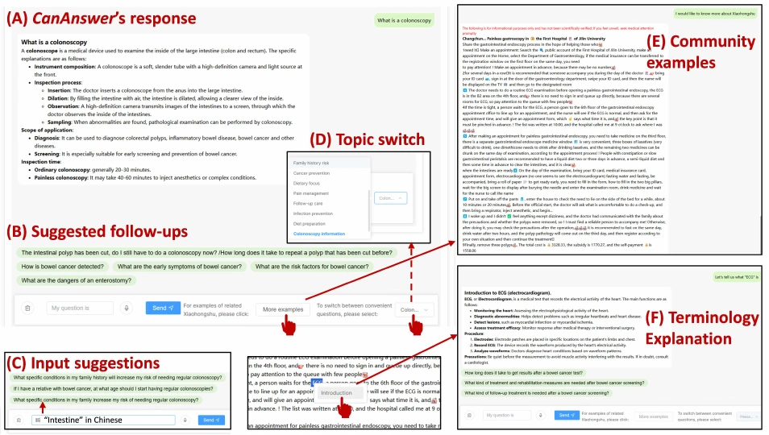

COGNITIVE SCIENCE · UC SAN DIEGO
Hi, I’m Zhiqing.
I study how AI can support people
in the middle of what they’re doing.
I’m a PhD student advised by Steven Dow. I build and study interactive systems for collaboration, with a focus on when and how AI should intervene.
My work spans creative tools, group conversations, and multi-agent coding. Across these settings, I’m interested in helping people take the next step while keeping them in charge.
A thread through my research
Support → intervention → coordination01 Making progressScaffolding a next step02 Joining the activityChoosing how and when to intervene03 Managing complexitySupporting attention across agents
01
DESIGNING THE SUPPORT
Making the next step easier.
My earlier projects explore how interfaces can help people express an idea, ask a question, or learn together. They ground my interest in support that fits the activity.

CSCW 2025
AskArt
Studying generative AI in elementary-school group art projects, and designing an interface around students’ questions and ways of working together.
A next step in shared learning.
Paper ↗
ICHEC 2025
CanAnswer
Connecting health information with community experiences, follow-up questions, and explanations that help people continue learning.
A next step in understanding.
Paper ↗These interfaces offer a place to start.
What changes when AI chooses the moment to help?
02
DESIGNING THE INTERVENTION
Joining a conversation already in motion.
In a group, a useful suggestion can also be an interruption. My current research examines how AI enters an ongoing exchange—and how that changes the conversation.
MANUSCRIPT UNDER REVIEW
PeerFocus
I built a mixed-initiative facilitator combining structured agendas and LLM-generated cues with participant-led discussion. A study with 88 participants across 33 sessions examined cue engagement, topic transitions, and peer interaction.
ONGOING
Timing, voice, and intensity
I use turn-taking models and probe-based interviews to investigate when an AI facilitator should enter, and how people respond to visual and audio interventions of different intensities.
From deciding when to enter a conversation
to deciding where support belongs across several tasks.
03
DESIGNING FOR ATTENTION
Supporting work across tasks and agents.
With Scott Klemmer, I study human–AI coding conversations to understand how developers manage multiple agents and long-running tasks. This extends my focus on intervention design to the attention and coordination demands of working with several AI systems.
Ongoing research · AI-assisted multitasking in coding
Publications & manuscripts
Google Scholar ↗Nudge or Interrupt? AI-Scaffolded Focus Groups Without a Facilitator.
Zhiqing Wang, A. Ibrahim, J. Rayan, T. Li, and Steven P. Dow.
Manuscript under review · CHI 2027Designing AI-Supported Focus Groups: A Role × Modality Playbook.
Zhiqing Wang and Steven Dow.
CHI 2026 Workshop on Developing an AI-Powered UX Research Point of ViewExploring the Usage of Generative AI for Group Project-Based Offline Art Courses in Elementary Schools.
Zhiqing Wang, Haoxiang Fan, Shiwei Wu, Qiaoyi Chen, Yongqi Liang, and Zhenhui Peng.
CSCW 2025DesignWeaver: Dimensional Scaffolding for Text-to-Image Product Design.
Sirui Tao, Ivan Liang, Cindy Peng, Zhiqing Wang, Srishti Palani, and Steven P. Dow.
CHI 2025Exploring Community-Powered Conversational Agent for Health Knowledge Acquisition: A Case Study in Colorectal Cancer.
Yiwei Yuan, Zhiqing Wang, Xiucheng Zhang, Yichao Luo, Shuya Lin, Yang Bai, and Zhenhui Peng.
ICHEC 2025